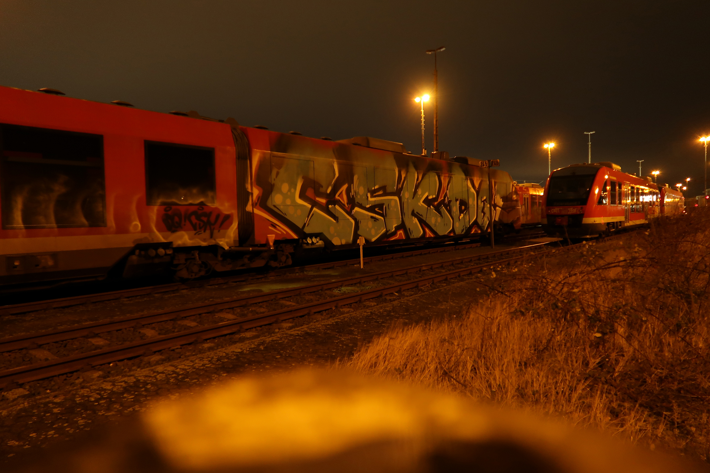
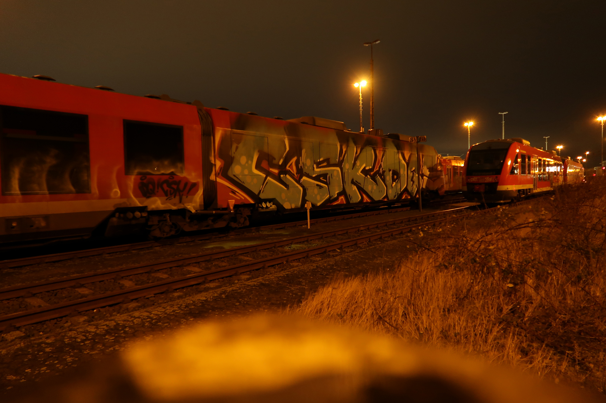
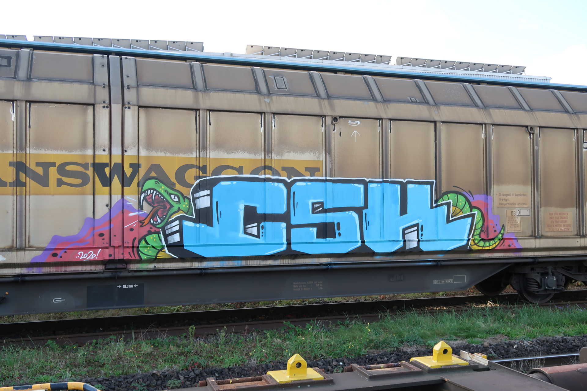
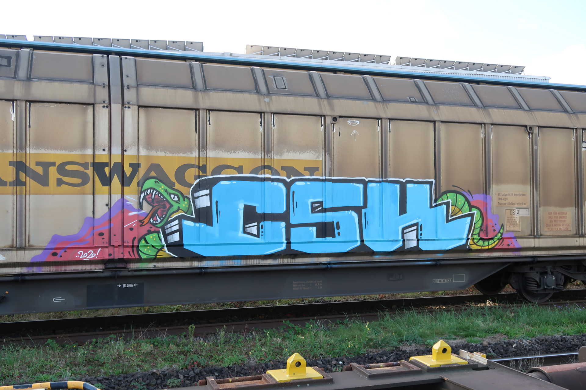
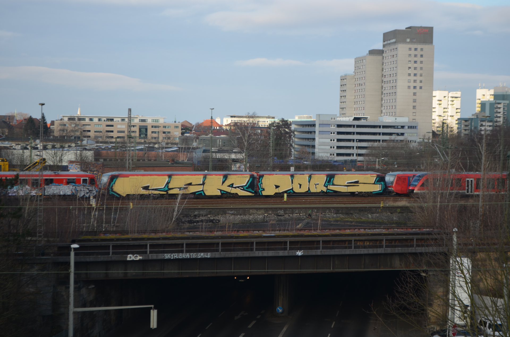
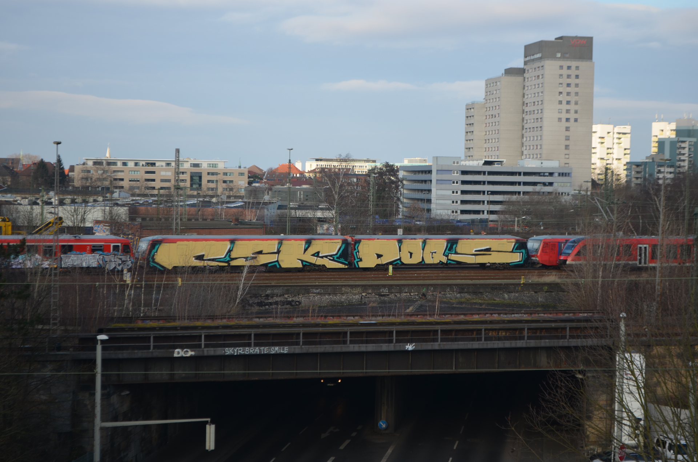
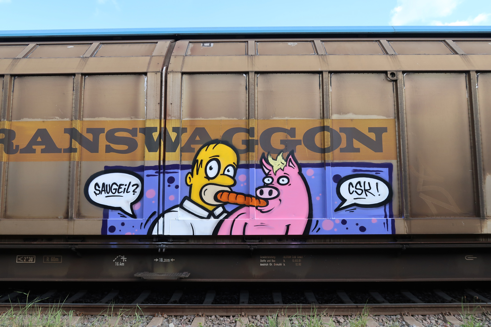
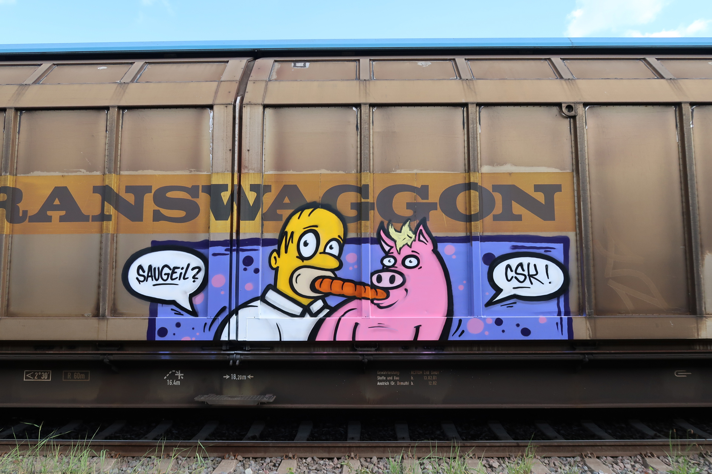

Junior
In seiner Crew wird er als “Junior” bezeichnet, da er mit 25 Jahren der Jüngste aus der Truppe ist. Seine Hobbies sind zeichnen und sprayen, besser gesagt: “Wir gehen Malen”. Mit seiner Crew, die als CSK (Commando Snitch Killer) bekannt ist und 2014 gegründet wurde, geht
er hin und wieder auf Streife um zu sprayen. In der Gruppe befinden sich 5 bis 10 Personen.
Manche aktiver, die anderen weniger. In der Gruppe unter sich wird ausschließlich der Gruppen-Name gesprayt und nicht der eigene Künstlername. Hier wird bewusst die Unterschrift
weggelassen und teilweise auch die einzelnen Buchstaben, C, S, und K, von unterschiedlichen
Personen gesprayt, um die Strafverfolgung zu erschweren. Sie haben deswegen auch lange hin und her überlegt, ob sie eine Online-Präsenz anstreben und waren eher negativ demgegenüber eingestellt. Jedoch haben die meisten Sprayer, die in der Szene sehr bekannt sind,
eine Online-Präsenz, weshalb sie sich nun doch für eine solche entschieden haben und veröffentlichten am 01. September sogar ihren ersten Instagram Post.
Arbeitsleben
Junior hat die Fachhochschule im Bereich Gestaltung erfolgreich abgeschlossen und befindet
sich derzeit in einem festen Arbeitsverhältnis. Anzumerken ist auch, dass sich alle Crew-Mitglieder in festen Arbeitsverhältnissen befinden, aber der schulische Werdegang stark variiert.
Einstieg in die Kunst
Junior sagt, dass er schon vor der Schulzeit von seiner Mutter stets mit Stiften versorgt wurde
und so schnellen Bezug zur künstlerischen Szene erlangt hat. Jedoch fing er verhältnismäßig
schnell an, auch fragwürdige Themen zu Papier zu bringen. Er ist in der Grundschule unter
anderem im Kunstunterricht aufgefallen, da er zwei sich prügelnde Menschen gezeichnet hat,
was die Lehrer gar nicht gefreut hatte.
SPRAYER SZENE
Es hat alles im 11. Lebensjahr angefangen, also ca. in der 5. Klasse, als ein Freund, den Junior
schon seit der Grundschule kennt, mit einem anderen Kollegen einen Abstecher zu einer legalen Wand gemacht hat, um dort zu sprayen. Eines Tages meinte Juniors Freund, dass er
doch auch mal mitkommen solle und ist mit den beiden direkt mitgegangen. Vor Ort habe
man nach Resten in Spraydosen gesucht, die von vorherigen Sprayern in den Müll geschmissen wurden, um diese noch auf die Wand zu bringen. Aktuell, so meint Junior, hat er mit seinem Grundschulfreund immer noch Kontakt, jedoch ist dieser nicht mehr in der Sprayer-Szene aktiv.
Erlebnisse
„Ich habe so vieles erlebt.”, sagt Junior. Eines seiner merkwürdigsten Erlebnisse war, als er
an der Autobahn an einer Lärmschutzmauer gesprayt hat und zu seinem Kollegen wundernd
sagte: „Ist es nicht merkwürdig, dass seit 3 Minuten kein einziges Auto auf einer sonst so viel
befahrenden Autobahn entlanggefahren ist?” Sein Kollege meinte nur, dass er weitermachen
und sich nichts dabei denken solle. Augenblicke später sehen sie aus weiter Distanz Blaulicht
auf sie zukommen und legten sich auf den Boden, um nicht entdeckt zu werden. Es hat sich
jedoch herausgestellt, dass nicht sie das Blaulicht verursacht haben, sondern ein Fertig-Haus,
was die gesamten Spuren eingenommen und so den Verkehr aufgehalten hat.
Kontakt mit der Polizei
„Schon öfter“, sagte Junior mit einem Grinsen im Gesicht. Bei ihm stand, nach einem Ermittlungsverfahren, die Polizei vor der Tür, um seine Sachen einzusammeln, die im Zusammenhang mit seinen Tätigkeiten stehen könnten. Darunter zählen Skizzen, Fotos, sein Handy,
Computer, Bücher und vieles mehr. Diese hat er jedoch nach stolzen 18 Monaten wieder zurückbekommen.
Junior meinte, dass er schon einige Male kurz vorm Sprayen von der Polizei erwischt wurde.
Eines Tages, als er zu einem Industriegebiet gefahren ist, welches sehr abgelegen und eher
selten befahren wird, fährt aus dem nichts ein Polizeiauto vor. Als er und sein Kollege von der
Polizei befragt wurden, konnte sein Kollege die beiden aus der Geschichte rausreden mit den
Worten, dass sie doch nur zu einer Disko gehen wollten, die er glücklicher Weise auch beim
Namen nennen konnte.
Bekenntnis zur ungehorsamkeit
In Bezug zum Graffiti kann Junior sagen, dass er anfangs einen Adrenalinkick hatte. Dieser
hat sich aber recht schnell durch die Routine relativiert. Die Anspannung, so Junior, kommt
eher durch das geringe Zeitfenster während des Sprayens und er sieht seine Leidenschaft
eher als Hobby, anstatt eines Bekenntnisses zur Ungehorsamkeit.
Dauer eines Werkes
Dies kann stark variieren. Wenn man sich einen illegalen Untergrund ausgesucht hat, wird alles von vorne bis hinten durchgeplant. Es gibt sogenannte „Supporter”, welche unter anderem
Wache halten, dann muss von jemandem vorher vor Ort recherchiert werden, wann die zuständigen Wachleute ihren Arbeitsplatz verlassen, das Motiv muss von vornherein feststehen
und so weiter. Die Planung nimmt viel mehr Zeit in Anspruch, als letztendlich die Aktion. Bei
einem illegalen Untergrund spricht man so von ca. 30 – 45 Minuten, bis das Werk fertig sein
muss, länger nicht. Bei einem legalen Untergrund kann es mehrere Stunden dauern.
Message oder Ästhetik
Unterschiedlich. Junior sagt, dass seine Kunstwerke meistens keine Botschaft haben. Ihm
geht es eher darum, in der Sprayer Szene präsent zu sein, oder auch in seinen Worten:
„Ich bin da, guck‘ mal, wie krass ich bin”.
DAS MÖCHTE ICH NOCH TUN
Es gibt so einiges, was er noch machen würde. Ihm fehlt nur Zeit und Geld. Er sagte, dass
Italien wohl das „Land der Züge” in der Sprayer Szene sei, da man dort entspannt die Züge
besprayen kann. In Italien werden die Züge wohl nicht bewacht und auch Überwachungskameras sind eher eine Seltenheit. Deshalb ist das eine der vielen Tätigkeiten, die er machen
würde, wenn Zeit und Geld keine Rolle spielen würden.
UNGEHORSAM IM ALLTAG
„Normalerweise halte ich mich an Regeln und bin auch kein Hau-drauf-Typ.”, sagt Junior. Er
kann Gewalt absolut und in jeglicher Form nicht unterstützen. Dennoch kann er jeden verstehen, der ab und zu die Regeln bricht, um außergewöhnliche Dinge zu vollziehen.


 

 

 

 
